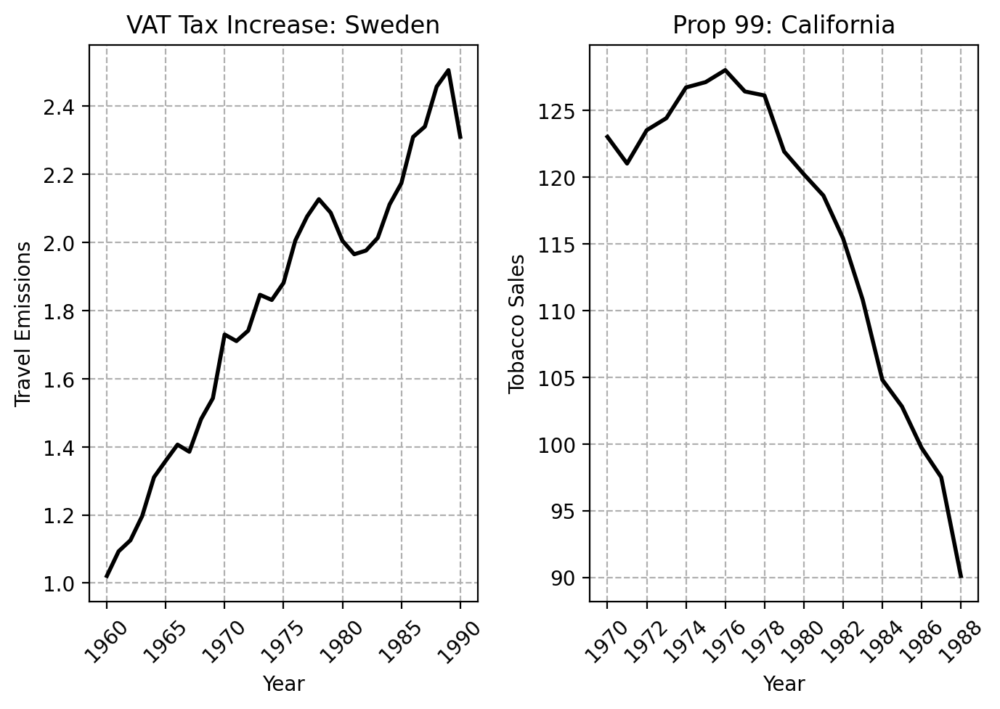
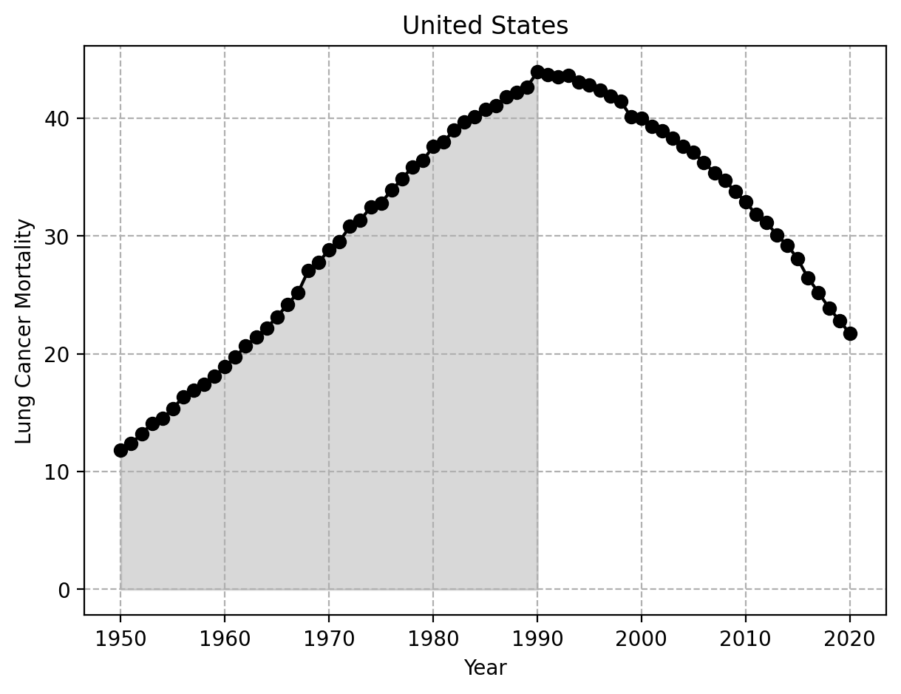

3 Identifying Policy Problems
3.1 Justifications For Policy
Before we can do any analysis though, we have to take a step back. We have to ask ourselves how we know a problem exists in the first place. There are two broad justifications that policy is based on: negative externalities and social good, but the main point of both justifucations is “harm”.
3.2 Externalities
The idea of externalities comes from microeconomic theory, which says that efficient markets will affect only those parties who willingly participate in transactions. Particularly in the case of negative extrnalities, or externalities which harm others, we could use public policy to rectify this.
Consider a very simple example: seatbelts. In physics, any force that is not stopped by an equal, oppostite force will keep going. So, if you’re in a car crash while driving at 60 miles per hour while unbuckled, the car stops. You, however, don’t stop: you keep going, 60 miles per hour through the windshield. No public policy is needed just yet. So far, any cost that comes from a transaction has been borne by you, the driver. By the way, I’m not kidding: one of the arguments against seatbelts was literally that using seatbelts should be a personal decision if it does not put others at risk. Additionally, industry also argued against mandatory seatbelt laws on the grounds that it was the government interfering between the transactions of a consumer and the seller.
However, there are a few issues with the externality argument. Firstly, being unbuckled turns you into a human projectile. You can hit your passengers or even others outside your vehicle if you’re unbuckled. Your market exchange (you buying the car and driving it) is now potentially having second-order effects on others by you not using a seatbelt. So, the government may wish to mandate seatbelts while driving in order to prevent these negative externalities which come in the form of medical bills or death. To address the argument of indsutry above, that seatbelt laws would raise costs of production, this raises an important moral dilemma: does the harm caused to the business of having to install seatbelts matter more than the human harm caused by a society where seatbelts are optional? Also, we are human beings. We have imperfect knowledge. We know for fact that we don’t have all the answers, to paraphrase Socrates. We also don’t know if the actions we do will ultimately hurt someone else. We live in a probabalistic world (which we will return to later). Indeed, we could argue against laws banning DUI in precisely this manner, saying that we don’t know if the intoxicated driver will harm someone until they do. But, as with seatbelts, we never know if there will be another passenger on the road or a child playing in the street. So, we rarely know if we’re actually putting peoples’ lives in danger by driving drunk or unbuckled. We can’t know if an externality will occur until it does, usually. Thus, the next view (social good) adopts a different form of reasoning.
4 Empirical Examples
We can consider two empirical example from the public policy literature (Abadie, Diamond, and Hainmueller 2010; Andersson 2019).
These two plots show the travel emissions trends of Sweden and per capita smoking rates of California, respectively. How might we go about identifying if a problem exists, though?
4.1 Identifying Problems: The Case of Tobacco
As we’ve discussed above, harm or necessity is typically a standard we look to in order to determine if policy is needed. As I’ve mentioned, California passed Proposition 99 in 1989 to reduce smoking rates. But, how did we know there was a problem to begin with? To do this, we can grab data on lung cancer morality rates from 1950 until today. Presumably, of course, we view lung cancer as harmful and somehthing we wish to prevent.

The shaded area represents the period before any state-wide anti-tobacco legislation was passed in the United States. We can see quite clearly the age-standarized lung cancer mortality rates rose in a fairly linear manner in the United States. However, the curve is parabolic; mortality rates were rising every single year until the zenith in 1990. Mortality began to fall when the first large scale anti-tobacco laws were passed. Of course, the degree to which these laws were the cause of this decrease is an empirical question. However, given the clear increase in lung cancer rates and other obvious harms of tobacco smoking, policymakers in California and the voters, in fact, became increasingly hostile to tobacco smoking in public and in other crowded areas where a large number of people could be exposed. So, California passed Proposition 99 in 1988 (as did at least a dozen other states from 1988 to 2000, passing similar laws). Just to tie this all together, this plot reinforces why data is needed for policy analysis. Had I not plotted this trend line, people (from the tobacco industry, for example) could simply say “Well, nobody knows if lung cancer mortality is a problem. How do we know if there’s a problem here? I don’t think one exists.” A simple plot of data over time can convincingly suggest that a harm is likely being casued by tobacco smoking (which peaked in the U.S. around 1965, but of course lung-cancer occurs more down-the-line). This plot makes a powerful case for how we can use data to evaluate if policy problems exist. In other words, data provides intellectual self-defense; if you posit that a problem exists, then this should be demonstrable using datasets that speak to the issue at hand.
4.2 The Swedish Carbon Tax
Follwoing similar arguments above, we can now consdier Sweden. Sweden was one of the first countries in the world to implement a carbon tax (Andersson 2019). The Social Democrats who were in power at the time implemented one, as an addition to the VAT tax on fuel, in 1990 specifically because of climate change. The left panel shows how transport emissions rose in Sweden consistently in the years before 1990, when the tax was passed. In this case, the economic reasoning is simple: the tax increases the price of fuel for consumers, suggesting that less people, on average, will drive as a result, using other forms of transportation. Again, presuming we wish to do demand-side policy to reduce the emissions emitted by a population, a tax is one way of potentially doing this. Much as with the tobacco example above, the plot provides us intellectual self-defense. We can see, for fact, that the emissions were trending upwards in the years before the policy took place.
5 Conclusions
The central takeaway here is that we can use data to idenitfy policy problems by simply looking at relevant datasets which show point to some metric of harm/inequity. Of course, we can also use statistical tools to evaluate good-ness. If a county passes some policy which sees if some local subsidy decreased people not having enough to eat, if we wish to check if a program meant to reduce recidivism actually did decrease it, we identify the effects of policy using existing datasets which we may collect and apply statistical techniques with.
3.3 Social Good
Moreover, the externality justification isn’t typically the way we think about things from a public policy perspective. Usually, we have social welfare goals in mind. This can come in the form of harm reduction or prevention measures. When we argue for public education, for example, we typically don’t do so because we think that the private schools won’t educate citizens enough (even though they won’t), and that public school will be to decrease inefficient education markets. In fact, we typically don’t think of education (in our formative years anyways) as a market at all. We usually argue for public education because we think that education has inherent benefits, and that being denied a certain level of education necessitates an inherent harm. Imagine for a moment how the literacy rate of the United States would look if school was completely optional. We likely would not complain about GDP loss, we’d likely complain about a society where lots of people can’t read the cereal box or function within society in a decent manner. In other words, society has a vested interest in keeping people safe, educated, and healthy to some degree. So we mandate seatbelt laws, basic schooling, and other laws/regulations in service of these ends. Importantly, “these ends” does not have a right or wrong answer. The goals of policy are ultimately decided by people within the society. However, knowing the goals of a policy and reasons for its existence helps us ask meaningful questions about it. Following the above discussion, a natural research question that follows is “How did seatbelt laws affect the rate of car accident injuries and deaths?”